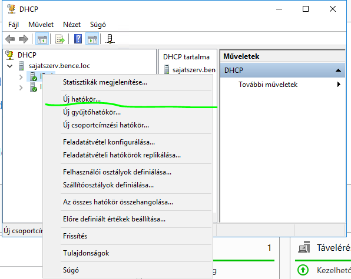
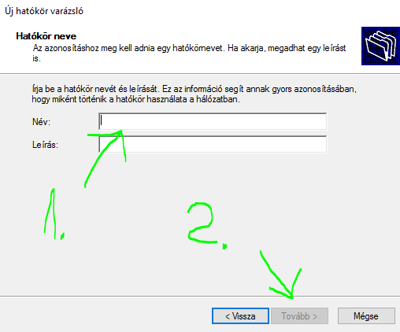
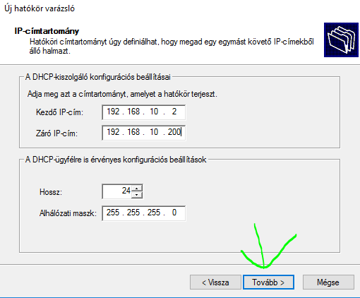
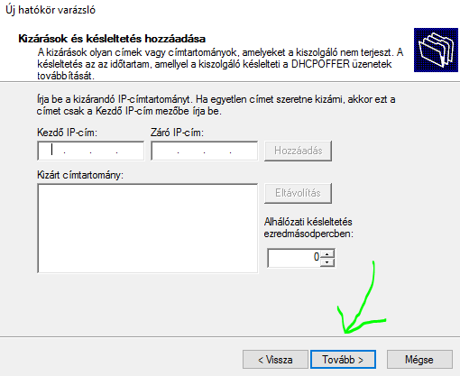
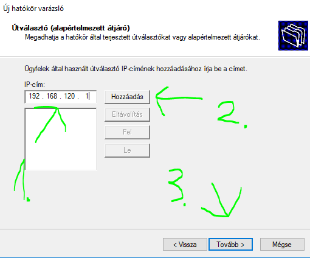
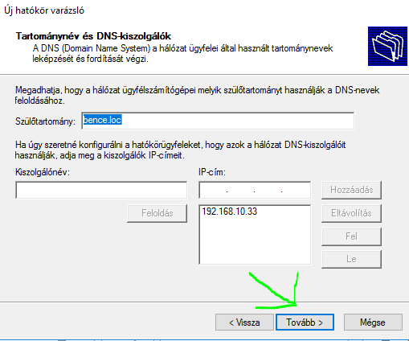

Hozzunk létre új hatókört (pool-t).
Adjuk meg a hatókör nevét (pool name).
Adjuk meg a cím tartományt amiből osztani szeretnénk szükség esetén az alhálózati maszkot vagy a prefixet.
Ha szükséges adjuk meg a kizárandó tartományt (nem kötelező).
Adjuk meg a szerver címét alapéltermezett átjáróként.
Ha már van DNS szolgáltatás konfigurálva hasonlóképpen fog kinézni ez a lap nem szükséges semmit állítani.
Ezután működőképes a DHCP szolgáltatás.